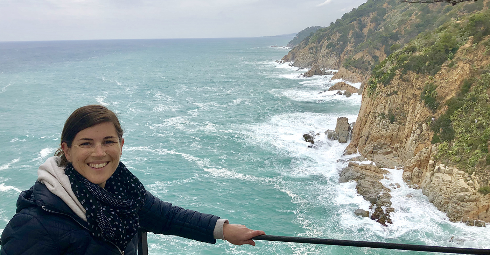

My Portfolio
Shoreby Club Website Redesign
HTML 5 & CSS Website
Established private Club in need of complete redesign of website for desktop, tablet and mobile platforms to assist in engagement with current and potential members. Updating all public and private pages, providing quicker load times and more visually appealing content.
Barle Soup and Sandwich Project
HTML 5 & CSS Website, Digital & Print Media Design
Brand new restaurant in need of website, digital and social media presence as well as print marketing.
Mayfield Sand Ridge Club Website Redesign
HTML 5 & CSS Website
Established Country Club in need of complete redesign of website for desktop, tablet and mobile platforms to assist in engagement with current and potential members. Updating all public and private pages, providing quicker load times and more visually appealing content.
About Me
JACK ~ OF ~ ALL ~ TRADES | MOM | WIFE | ADVENTURE SEEKER | FOREVER LEARNER
I love to develop and reinforce the many skill-sets that I have learned throughout my career. My keen eye and strong attention to detail help assure successful task completion whether it is day-to-day operations or large-scale project management. After years of working with IT professionals as a project manager in the hospitality industry, I realized I had to become self-sufficient if I wanted to get my work done and keep my job. I didn’t ave the same conventional business hours as the IT professionals and if I wanted to get home in time to kiss my kids goodnight, I had to teach myself several tricks to handle the glitches or crises that can occur in massive operations after 5 p.m., sometimes with hundreds of people depending on you. Other times major and minor details of a project would be better suited for everyone if I tweaked the issues myself. I knew the organization I was working for better than the outside contractors and could provide quicker results, even if it meant I had to teach myself a new software or an IT skill. Hundred of hours, failed attempts, and a few major successes later, I still couldn’t get enough of this techy stuff! When the opportunity presented itself, I decided I needed to take my hobby to the next level and complete the Break Into Tech Blueprint through Skillcrush.